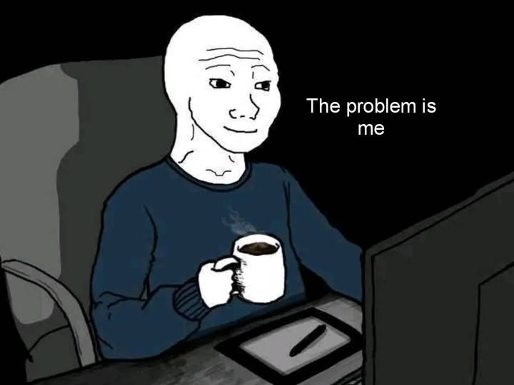

თუ შენ გაიაზრებ, რომ პრობლემები შენშია, მხოლოდ ამის შემდეგ შეძლებ მათ მოგვარებას. მოეშვი სხვებზე გადაბრალებას. გაანალიზე საკუთარი ქმედებები და დაფიქრდი შენს თითოეული ქცევას რა შედეგამდე მიჰყავხარ. რა მოხდებოდა მათი გამოსწორების შემთხვევაში? რა გიშლის ხელს რომ ცუდი ჩვევები გამოასწორო? ვინ არ გასვენებს? რა/ვინ დაგეხმარებოდა წინსვლაში? იფიქრე ამ ყველაფერზე და გაუმჯობესდი ყოველდღიურად. გახსოვდეს, წარმატებისკენ დიდი გზაა, რომელზეც მოკლე ნაბიჯებით უნდა იარო. ვერ გადაახტები, ვერ დაიმოკლებ, ვერც cheat-ებს ჩართავ. თავგანწირული ბრძოლაა საჭირო. თქვი უარი იმაზე, რაც გაზიანებს. გაჰყევი გზას, რომელსაც GOA დაგისახავს. გახდი საკუთარი თავის საუკეთესო ვერსია

Goal_Oriented_Academy__GOA-ში ბევრი ახალი რამ ვისწავლე გავიგე ბევრი რამ და მივხვდი რომ სირთულის დაძლევა ძალიან მარტივია . აქ ვისწავლე რომ ბევრი სირთულე არ ნიშნავს რომ დებილი ხარ არამედ ნიშნავს რომ კიდევ ბევრი რამ გაქ სასწავლი გოა ხელს გიწყობს განვითარებაში ყველანაირად